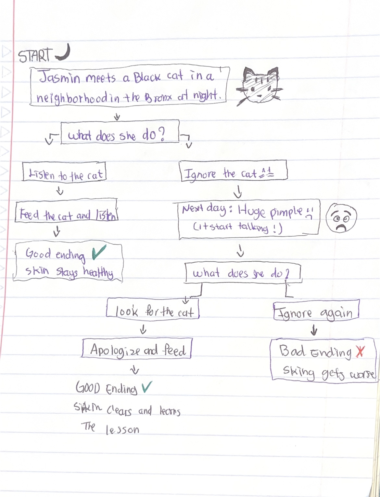

There was once a girl named Jasmin who loved makeup and skincare. She used many products every day because she wanted perfect skin. One night, she met a black cat in a neiborhood that warned her to stop overdoing it or her skin would get worse. It said if she fed it, nothing bad would happen, but she ignored it. The next morning, she woke up with a huge pimple. Nothing helped, and she remembered the cat’s warning. Later, she heard the pimple talk—it said her skin was tired of too many chemicals. The cat appeared again, and Jasmin apologized and gave it food. The cat forgave her and told her not to overdo it. When she got home, the pimple was gone. From then on, she took better care of her skin.
